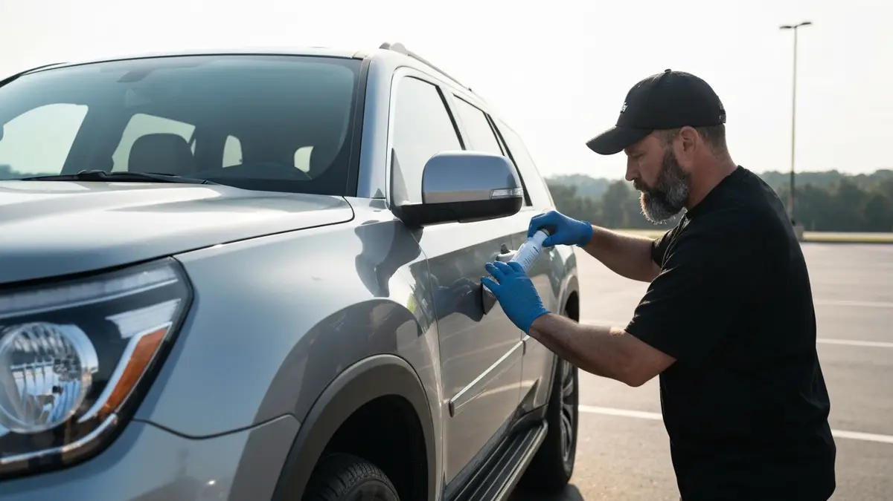

Auto Detailing in Dalton, Georgia
Mobile Car Detailing in Dalton, GA
For residents of Dalton, GA, maintaining a pristine vehicle presents unique challenges that demand more than just a quick wash. As the "Carpet Capital of the World," our community constantly experiences fine industrial particulates from the flooring plants settling on vehicles, creating a persistent battle against dullness and contaminants. Beyond this unique local factor, Dalton's humid climate, seasonal pollen, and ever-present red clay further contribute to vehicle wear. With busy lifestyles, commuting along I-75, and managing households in diverse neighborhoods from historic downtown to newer suburban developments, finding time for traditional detailing can be a hassle. Our mobile service eliminates this inconvenience, bringing expert care directly to your driveway, saving you precious time and ensuring your vehicle receives the specialized attention it needs to combat Dalton's specific environmental elements.

Why Dalton, GA Residents Choose Scenic City Detailing
Scenic City Detailing is not just another detailing service; we are intimately familiar with Dalton, GA, and its specific environmental demands. Operating regularly within Whitfield County, our team understands the relentless challenge of industrial dust, seasonal pollen, and common road grime on local vehicles. Our proximity to Dalton and consistent service in the area has allowed us to build a reputation for reliability and excellence among our neighbors. We know which products and techniques best combat the unique contaminants found here, ensuring your vehicle receives effective, long-lasting care tailored to the "Carpet Capital."
Our mobile detailing service provides unparalleled convenience for busy Dalton homeowners and businesses. Imagine having your car meticulously detailed while you work, run errands on Walnut Avenue, or enjoy time with family at Lakeshore Park, all without leaving your property. This saves valuable time that would otherwise be spent driving to and from a detail shop. Furthermore, our specialized approach and premium products are designed to protect your vehicle's finish from the constant onslaught of airborne particulates and local weather, preserving its value and appearance against Dalton's challenging conditions.
Our Mobile Car Detailing Services in Dalton, GA
- Exterior Decontamination & Shine: Specifically formulated to tackle the persistent industrial fallout, road grime, and pollen common in Dalton, GA. We utilize specialized pH-neutral chemicals and clay bar treatments to safely remove embedded contaminants, followed by a durable sealant to protect your vehicle's paint from future particle accumulation and local weather.
- Interior Deep Cleanse & Odor Guard: Addresses the fine dust that inevitably infiltrates vehicle cabins in Dalton, alongside pet hair and everyday spills. Our deep vacuuming, steam cleaning, and comprehensive wipe-down processes target every crevice, ensuring a fresh, allergen-reduced environment. We also apply an odor neutralizer to combat any lingering smells from the local atmosphere.
- Signature Full Detail Package: The ultimate solution for vehicles consistently exposed to Dalton's unique environmental factors. This comprehensive service combines our meticulous exterior decontamination with an exhaustive interior deep clean, ensuring every surface is pristine and protected. It's designed to restore and maintain your vehicle's showroom appeal despite the daily challenges of the "Carpet Capital."
- Paint Correction & Ceramic Coating: Essential for long-term paint protection in Dalton's demanding environment. This service expertly removes swirl marks, light scratches, and oxidation caused by industrial fallout and UV exposure. Following correction, a durable ceramic coating is applied, creating a robust, easy-to-clean barrier against contaminants, making washes more effective and keeping your car looking newer, longer.
Serving Dalton, GA and Surrounding Areas
Scenic City Detailing proudly extends its mobile car detailing services across all of Dalton, GA, a vibrant city nestled in Whitfield County. Situated strategically along I-75, just south of the Chattanooga metropolitan area, Dalton is easily accessible for our mobile teams. We routinely serve residents and businesses along major corridors such as Walnut Avenue (US-76), Cleveland Highway (US-41), and throughout the city's diverse neighborhoods. From the historic charm of downtown Dalton to the family-friendly communities of Carbondale, and newer developments stretching towards Rocky Face and Varnell, our mobile detailers cover it all. Whether your vehicle is parked near Dalton State College or at a business park off Shugart Road, we bring our premium services directly to you, making professional car care convenient and accessible across the entire carpet capital.
Frequently Asked Questions About Mobile Car Detailing in Dalton, GA
How much does mobile car detailing cost in Dalton, GA?
Our mobile car detailing costs in Dalton, GA are competitive and vary based on your vehicle's size and the specific service package chosen. While a basic exterior wash starts lower, a comprehensive full detail for a mid-sized sedan typically ranges from $200-$350. Larger vehicles common in Dalton, such as SUVs or trucks often found in family-oriented neighborhoods, may incur slightly higher costs due to increased surface area and time required. We provide transparent, upfront quotes tailored to your vehicle's needs.
How long does mobile car detailing take for a typical Dalton, GA home?
The duration of mobile car detailing for a typical vehicle in Dalton, GA depends on the service level and vehicle condition. A standard exterior and interior detail usually takes between 2-4 hours. More extensive services, such as a full paint correction or ceramic coating application, can extend to 4-8 hours or more. Our team works efficiently at your home or business, aiming to provide a thorough detail with minimal disruption to your day, whether you're in a historic home or a newer subdivision.
Do you serve all of Dalton, GA?
Yes, absolutely! Scenic City Detailing is proud to serve the entire Dalton, GA area. Our mobile units cover all neighborhoods and commercial zones, from the bustling downtown core to residential areas like Carbondale, Cohutta, and Varnell. Whether you reside near Lakeshore Park, off Cleveland Highway, or closer to Dalton State College, our professional team will come directly to your preferred location, bringing our top-tier detailing services right to your doorstep.
How do you specifically address the industrial dust in Dalton, GA?
Our detailing process for vehicles in Dalton, GA is specifically adapted to combat the persistent industrial particulates from local flooring plants. We employ advanced pre-soak solutions and specialized decontamination washes that safely loosen and encapsulate these fine particles. This is followed by a thorough clay bar treatment to physically remove any bonded contaminants without scratching your paint. Finally, we recommend applying durable sealants or ceramic coatings, which create a slick barrier that helps repel future dust adhesion and makes subsequent cleaning much easier for Dalton residents.
Ready to schedule your mobile car detailing service in Dalton, GA? Call us today or use the contact form above — we serve Dalton, GA and all surrounding areas of Chattanooga, TN. Most Dalton, GA jobs are scheduled within 48-72 hours.
Get Your Free Auto Detailing Quote in Dalton
Call or text today. Most vehicles scheduled within the week.